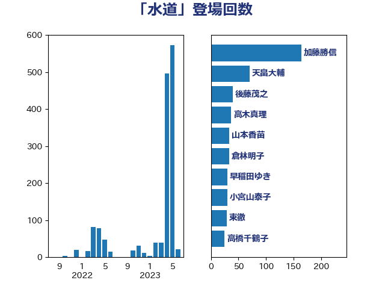

単語「水道」

| 後藤茂之 | 自由民主党 | 40 回 |
| 山崎正恭 | 公明党 | 20 回 |
| 羽田次郎 | 立憲民主党 | 19 回 |
| 森山浩行 | 立憲民主党 | 12 回 |
| 田村憲久 | 自由民主党 | 12 回 |
| 小林鷹之 | 自由民主党 | 9 回 |
| こやり隆史 | 自由民主党 | 8 回 |
| 豊田俊郎 | 自由民主党 | 8 回 |
| 岸田文雄 | 自由民主党 | 7 回 |
| 西銘恒三郎 | 自由民主党 | 7 回 |
| 里見隆治 | 公明党 | 7 回 |
| 山下芳生 | 日本共産党 | 6 回 |
| 田村貴昭 | 日本共産党 | 6 回 |
| 竹谷とし子 | 公明党 | 6 回 |
| 長妻昭 | 立憲民主党 | 6 回 |
| 佐藤英道 | 公明党 | 5 回 |
| 加田裕之 | 自由民主党 | 5 回 |
| 川田龍平 | 立憲民主党 | 5 回 |
| 音喜多駿 | 日本維新の会 | 5 回 |
| 小寺裕雄 | 自由民主党 | 4 回 |
| 岡本あき子 | 立憲民主党 | 4 回 |
| 岸真紀子 | 立憲民主党 | 4 回 |
| 本田顕子 | 自由民主党 | 4 回 |
| 伊藤孝恵 | 国民民主党 | 3 回 |
| 大西健介 | 立憲民主党 | 3 回 |
| 打越さく良 | 立憲民主党 | 3 回 |
| 末松信介 | 自由民主党 | 3 回 |
| 高橋千鶴子 | 日本共産党 | 3 回 |
| 伊波洋一 | 無所属 | 2 回 |
| 古賀篤 | 自由民主党 | 2 回 |
| 小宮山泰子 | 立憲民主党 | 2 回 |
| 小山展弘 | 立憲民主党 | 2 回 |
| 山本博司 | 公明党 | 2 回 |
| 岡本三成 | 公明党 | 2 回 |
| 櫻井周 | 立憲民主党 | 2 回 |
| 浅田均 | 日本維新の会 | 2 回 |
| 滝沢求 | 自由民主党 | 2 回 |
| 石井啓一 | 公明党 | 2 回 |
| 石垣のりこ | 立憲民主党 | 2 回 |
| 緒方林太郎 | 無所属 | 2 回 |
| 足立敏之 | 自由民主党 | 2 回 |
| 三木圭恵 | 日本維新の会 | 1 回 |
| 下条みつ | 立憲民主党 | 1 回 |
| 下野六太 | 公明党 | 1 回 |
| 中川郁子 | 自由民主党 | 1 回 |
| 伊佐進一 | 公明党 | 1 回 |
| 古賀友一郎 | 自由民主党 | 1 回 |
| 吉田宣弘 | 公明党 | 1 回 |
| 嘉田由紀子 | 無所属 | 1 回 |
| 坂本哲志 | 自由民主党 | 1 回 |
| 城井崇 | 立憲民主党 | 1 回 |
| 塩川鉄也 | 日本共産党 | 1 回 |
| 太栄志 | 立憲民主党 | 1 回 |
| 守島正 | 日本維新の会 | 1 回 |
| 室井邦彦 | 日本維新の会 | 1 回 |
| 山下貴司 | 自由民主党 | 1 回 |
| 山口那津男 | 公明党 | 1 回 |
| 山本左近 | 自由民主党 | 1 回 |
| 山田太郎 | 自由民主党 | 1 回 |
| 岸信夫 | 自由民主党 | 1 回 |
| 斉藤鉄夫 | 公明党 | 1 回 |
| 日下正喜 | 公明党 | 1 回 |
| 有村治子 | 自由民主党 | 1 回 |
| 本村伸子 | 日本共産党 | 1 回 |
| 杉久武 | 公明党 | 1 回 |
| 杉本和巳 | 日本維新の会 | 1 回 |
| 柳ヶ瀬裕文 | 日本維新の会 | 1 回 |
| 梅村聡 | 日本維新の会 | 1 回 |
| 梶山弘志 | 自由民主党 | 1 回 |
| 河野義博 | 公明党 | 1 回 |
| 泉田裕彦 | 自由民主党 | 1 回 |
| 熊谷裕人 | 立憲民主党 | 1 回 |
| 田村まみ | 国民民主党 | 1 回 |
| 田村智子 | 日本共産党 | 1 回 |
| 神津たけし | 立憲民主党 | 1 回 |
| 穀田恵二 | 日本共産党 | 1 回 |
| 竹内譲 | 公明党 | 1 回 |
| 紙智子 | 日本共産党 | 1 回 |
| 角田秀穂 | 公明党 | 1 回 |
| 赤嶺政賢 | 日本共産党 | 1 回 |
| 赤羽一嘉 | 公明党 | 1 回 |
| 足立康史 | 日本維新の会 | 1 回 |
| 辻元清美 | 立憲民主党 | 1 回 |
| 鈴木義弘 | 国民民主党 | 1 回 |
| 青木愛 | 立憲民主党 | 1 回 |
| 青柳仁士 | 日本維新の会 | 1 回 |
| 須藤元気 | 無所属 | 1 回 |
| 馬場伸幸 | 日本維新の会 | 1 回 |
| 高木かおり | 日本維新の会 | 1 回 |